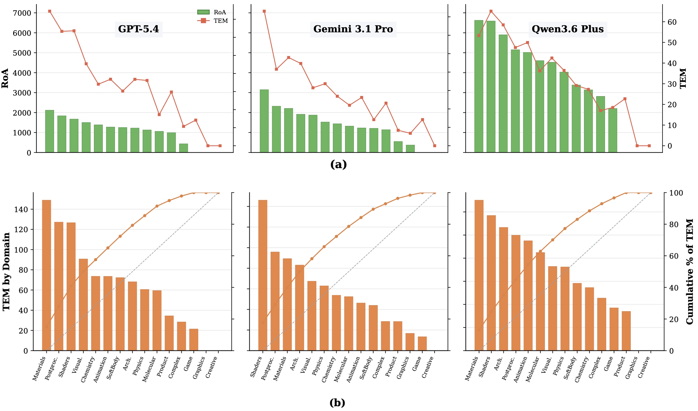
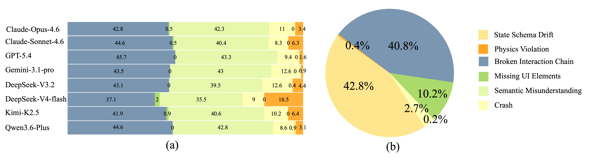

Generating a moving 3D world is much harder than drawing a few objects. Assets must load, physical state must evolve, controls must update the engine rather than only the HUD, and a multi-step user activity must remain consistent. WorldCoder-Bench turns these requirements into an executable benchmark and uses StateProbe to inspect browser runtime state instead of judging screenshots alone.
This post reads WorldCoder-Bench: Benchmarking Physically Grounded 3D World Synthesis by Shuo Lu, Yinuo Xu, Kecheng Yu, and colleagues (current arXiv v3, 6 Nov 2026). It contributes tasks and an evaluation protocol, not a new 3D generator. See the paper repository and anonymous release for code and data.
1. Topic: what does it mean to build a working 3D world?
A browser-based Three.js world combines geometry, materials, animation, physics, and interaction. A screenshot can indicate whether it looks right; the DOM can reveal buttons and labels. Neither exposes the canvas's coordinates, velocities, collision state, selected mode, or hidden variables. A ball may be rendered in the right place without obeying gravity, or a door may display “open” while still blocking the player.
The research target is therefore not image generation alone, but executable, interactive, verifiable worlds from natural-language specifications. A valid artifact must instantiate the scene and assets, make user actions trigger the right state transitions, and preserve physical or logical constraints afterwards. Evaluation must turn hidden browser state into auditable evidence.
2. Related work: from web-code evaluation to runtime contracts
| Direction | Typical approach | Gap addressed here |
|---|---|---|
| Web/UI-to-code benchmarks | Compare screenshots, DOM, or visual judgments | Three.js logic lives inside <canvas>, so DOM observation is insufficient |
| Interactive web evaluation | Click, type, and inspect outcomes | Exploration is costly and nondeterministic, and rarely checks hidden physical quantities |
| 3D and game benchmarks | Focus on appearance, scenes, or local interactions | Physical correctness, asset loading, and state synchronization are seldom tested together |
The paper replaces a single reference HTML with a behavioral contract. Multiple implementations are valid if the runtime states after prescribed actions satisfy the same contract. This permits implementation diversity while hiding the checks that would otherwise invite metric gaming.
3. Research questions: which kinds of “success” should be separated?
Our reading groups the paper's questions as follows:
- Can screenshots, DOM inspection, and generic visual judges reliably determine whether a 3D world actually works?
- How can a benchmark be large while every task remains deterministically testable at runtime?
- Do generated worlds survive changes to gravity, object counts, initial states, or asset names?
- What is the relationship between correctness, cost, and generation speed?
StateProbe answers these questions by loading the output in sandboxed Chromium, reading a standardized runtime interface, executing hidden actions, and checking hidden contracts over each state transition.
4. Method: from task construction to StateProbe

Step 1: define the deliverable as runnable HTML
Each task contains task.json and an optional assets/ directory. The model sees the natural-language brief, required observable-state schema, and resources, then emits a self-contained Three.js HTML. It does not see the action sequence, thresholds, assertion scripts, or hidden contract. The benchmark has 2,026 expert-curated tasks in three macro-categories and 15 fine-grained domains:
| Macro-category | User intent | Typical checks | Tasks |
|---|---|---|---|
| Simulation | Observe system evolution | Physics, chemistry, soft bodies, conservation | 649 |
| Rendering | Control visual presentation | Materials, shaders, post-processing, procedural effects | 620 |
| Application | Complete an interactive goal | Games, animation, products, architecture, visualization | 757 |
Step 2: curate tasks while holding out evaluation logic
Five PhD researchers in graphics and interactive systems hand-crafted seed tasks over two months. LLM expansion produced more than 10,000 candidates; annotators removed ambiguous, trivial, or nondeterministically evaluable tasks; headless-browser checks verified assets, loading, and interface stability; experts then authored contracts for affordances, reachable states, action transitions, and numerical invariants.
The released splits serve different purposes: Core has 205 difficult leaderboard tasks, Extended has 1,621 broader hidden tasks, Robust has 615 perturbation variants (three per Core task), and Dev has 200 tasks with public contracts. Robust changes gravity, elasticity, masses, object counts, initial states, prompt wording, or .glb filenames, and adapts the contract. It tests sensitivity to changed specifications, but the paper explicitly notes that perturbation alone cannot prove resistance to template memorization.
Step 3: harden the checker with mutation testing
Starting from validated reference implementations, the authors inject stale state updates, corrupted physical constants, broken asset loading, swapped event targets, and HUD mismatches. A contract is retained only if it rejects these mutants; otherwise it is revised or the task is discarded. This reduces permissive evaluation, but does not prove that every possible defect is covered.
Step 4: execute actions and record before/after state
Generated programs expose an interface such as window.__3D_STATE__ containing coordinates, velocities, modes, counters, camera distance, and interaction flags. StateProbe uses Playwright/Chromium with a version-locked Three.js archive. It first checks loading, a live WebGL context, a render loop, and early exceptions; failures are labeled Runtime_Crash.
For executable outputs, the evaluator applies clicks, key presses, drags, or physics-step commands. It snapshots state before and after every action, evaluates hidden postconditions over the delta, and labels the task Runtime_Crash, Check_Fail, or Check_Pass. The result is a replayable trace rather than a subjective “looks good.”
Step 5: coverage and quality-adjusted utility
- A-Cov (Affordance Coverage): specified objects, controls, and affordances are present.
- S-Cov (State Coverage): required intermediate states are reachable.
- T-Cov (Transition Coverage): action-triggered postconditions pass.
- V-Cov (Verification Coverage): the tier-weighted primary score.
V-Cov is the leaderboard metric; the first three diagnose “present but inert” and “reachable but not synchronized” failures. The paper also defines Return on Automation (RoA) and Time Efficiency Multiplier (TEM): estimated human effort discounted by V-Cov, divided by model cost or generation time. Because the calculation uses an assumed developer rate of about $60/hour and difficulty-conditioned effort estimates, these are utility proxies, not observed replacement costs.
5. Experiments and results: overall validity before failure diagnosis
Main experiment: nine models on 205 Core tasks
All nine models receive the same task.json and assets zero-shot and emit one HTML file. Core contains 205 difficult tasks. Results below are percentages, higher is better:
| Model | V-Cov | Simulation | Rendering | Application | A-Cov | S-Cov | T-Cov |
|---|---|---|---|---|---|---|---|
| GPT-5.4 | 27.8 | 26.8 | 37.8 | 23.5 | 66.2 | 46.1 | 26.3 |
| Gemini 3.1 Pro | 26.5 | 27.0 | 35.9 | 21.4 | 67.4 | 45.9 | 25.1 |
| Qwen 3.6-Plus | 25.3 | 24.6 | 30.4 | 23.2 | 65.3 | 43.6 | 23.7 |
| MiniMax M2.7 | 23.0 | 22.6 | 30.2 | 19.7 | 57.6 | 39.9 | 21.7 |
| DeepSeek V3.2 | 21.9 | 21.3 | 28.8 | 18.8 | 60.5 | 37.4 | 20.7 |
| Claude Sonnet 4.6 | 18.7 | 21.4 | 25.1 | 13.7 | 56.5 | 33.4 | 17.0 |
| Kimi K2.5 | 18.2 | 13.6 | 29.3 | 15.8 | 50.9 | 34.4 | 17.1 |
| Claude Opus 4.6 | 17.5 | 18.2 | 22.2 | 14.6 | 58.6 | 38.3 | 15.8 |
| DeepSeek V4-Flash | 16.5 | 11.8 | 24.2 | 15.8 | 40.6 | 30.7 | 15.9 |
The most important result is not simply the winner: no model exceeds 30% V-Cov. A-Cov ranges from 40.6–67.4%, S-Cov from 30.7–46.1%, and T-Cov from 15.8–26.3%. Models can place objects and controls more readily than they can make actions drive the correct state chain. Rendering (22.2–37.8%) is stronger overall than Simulation (11.8–27.0%) and Application (13.7–23.5%), consistent with more regular material/shader APIs than numerical physics and multi-step synchronization.
Comparison: external observation is not contract verification
Across 1,434 model–task pairs, DOM-only inspection has Kendall τb = -0.021 against the contract score, screenshot plus VLM has τb = -0.068, and an eight-step pure agent has τb = +0.111. The agent still calls 45.6% of outputs with V-Cov below 30% passing. Relative to DOM, the reported costs are about 1×, 50×, and 400×. Seeing a button, matching a picture, or probing a few steps is therefore not a substitute for contract-level state verification.
Robust: scores fall when specifications change
On 615 perturbation variants, GPT-5.4 and Gemini reach 19.9% and 19.1% V-Cov; Qwen drops from 25.3% on Core to 13.5%. Robust is useful as a stress test, but the decline alone cannot be interpreted as a pure measure of memorization, because perturbation types vary by task.
Utility and error analysis: cheap is not correct, and schema drift dominates

Under the paper's assumptions, DeepSeek V4-Flash has the highest RoA ($19,150 per dollar), while GPT-5.4 has the highest TEM (68.87×). These values multiply low cost or latency by V-Cov; incorrect behavior is discounted. Human effort comes from seven practitioner estimates, and repair, evaluation, and infrastructure costs are not measured.
The authors inspect 596 records with zero T-Cov. The primary diagnostic distribution is dominated by state-schema drift (42.8%) and broken interaction chains (40.8%), together 83.6%; physics violation is 0.4% and semantic misunderstanding 2.7%. These percentages come from a zero-T-Cov diagnostic subset, labels can overlap, and they are not population failure rates. Completing Kimi's missing interface raises V-Cov only from 18.2% to 20.1%, and Opus from 17.5% to 18.9%: adding an interface does not make the behavior chain correct.
6. Our reflections
Topic reflection: what is this field studying?
WorldCoder-Bench moves the target from “render a plausible 3D picture” to “deliver a program that can be operated and verified.” Its strongest abstraction is to express correctness as a contract over before/after states: implementation details may differ, but behavioral evidence must agree. For research-agent evaluation, this is a step from result screenshots toward auditable execution traces.
Limitation reflection: what remains unresolved?
First, __3D_STATE__ is itself a required observable interface; omission or schema drift can obscure visual quality, so the benchmark jointly tests observability compliance and behavior. Second, Core is a difficulty-selected diagnostic set, not a representative sample of all browser 3D requests. Third, RoA/TEM depend on public prices, seven effort estimates, and one generation-latency accounting; they exclude repair loops. Fourth, perturbations test changed specifications but cannot by themselves separate template recall, pretraining knowledge, and mechanism understanding.

Solution reflection: where could evaluation go next?
Evaluation could maintain two parallel evidence streams: runtime contracts for state and actions, plus multi-view rendering, geometry, and asset-semantic checks for appearance. Complete applications should report end-to-end route success, state persistence, collision failures, and recovery—not only average coverage. Generalization should vary unseen mechanisms, asset combinations, and interaction topologies with stratified results for each perturbation. Finally, cost studies should log every attempt, retry, tool call, evaluator run, and human repair, producing a real cost curve from first draft to deliverable.
One-sentence takeaway: WorldCoder-Bench does not merely help an evaluator “see more clearly”; it enters the world's runtime and asks whether each action caused the required state change. Current models remain far from reliably delivering verifiable interactive 3D worlds.
References: arXiv record and versions, HTML full text, code and data.